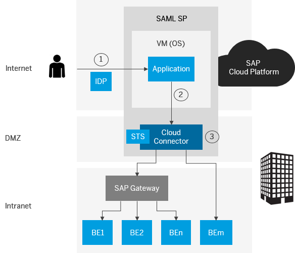

The connectivity service provides a secure way of forwarding the identity of an on-demand user to the Cloud connector, and from there to the back end of the relevant on-premise system. This process is called principal propagation. It uses SAML tokens as the exchange format for the user information. User mapping takes place in the back end and, in this way, either the token is forwarded directly to the back end or an X.509 certificate is generated, which is then used in the back end.
| Process in Steps | Steps Description |
|---|---|
|
 |
|
You can create and configure connectivity destinations making use of the PrincipalPropagation property in the Eclipse IDE and in the cockpit. Bear in mind that this property is only available for destination configurations created in the cloud.